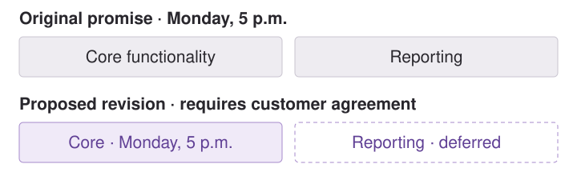
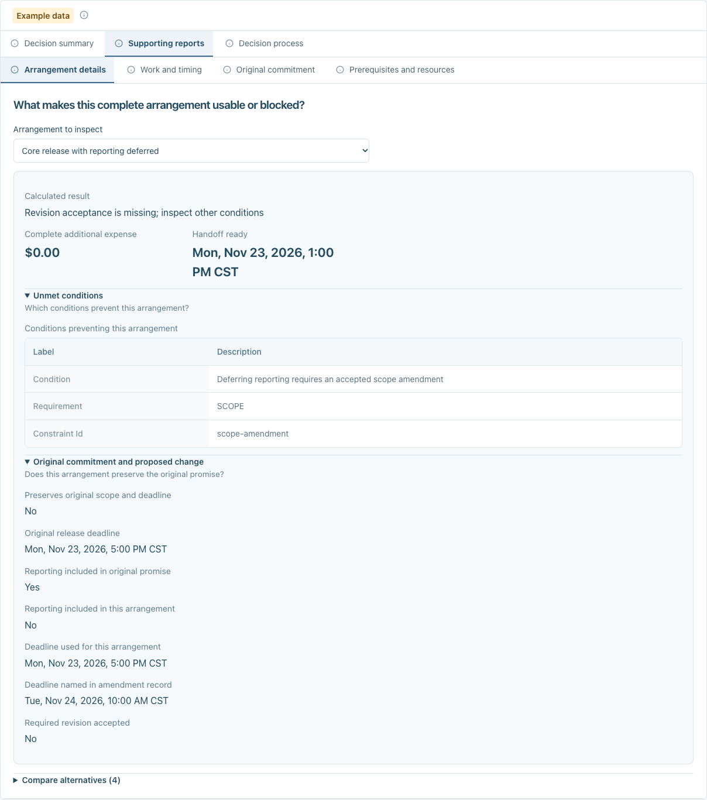
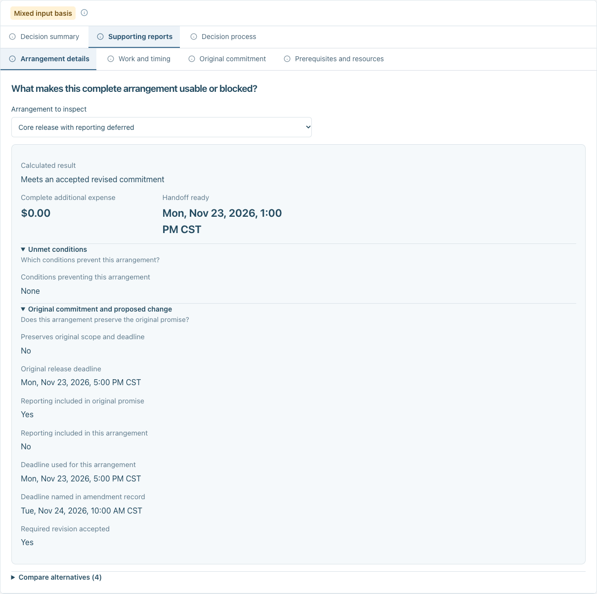

The first release review gives Nina a $400 way to preserve the original scope and deadline. Finance asks a reasonable question: could the team release core functionality first and deliver reporting separately?
The customer needs core functionality urgently, but reporting was part of Release 2026.11. Nina cannot treat a smaller release as delivery of the full promise merely because its schedule looks comfortable. Her decision is now whether an explicitly agreed revision creates a useful alternative.
Separate three claims before changing the input.


| Claim | What would establish it? |
|---|---|
| Core-only can finish before the original cutoff. | Its complete work, resource and handoff schedule meets the recorded requirements. |
| Core-only fulfills the original promise. | It would have to include the reporting that was originally promised. This arrangement does not. |
| The customer has accepted deferring reporting. | A specific scope amendment has actually been agreed and its acceptance is recorded for this release. |
The core-only schedule includes a one-hour handoff and ends at 1 p.m., before the original cutoff. That schedule does not establish agreement to the change.
Change the amendment record, retain the other facts.
Compare two operating situations. Estimates, working windows, qualifications, fee, spending limit, release permission and deadlines stay the same. The only changed input is whether deferring reporting is explicitly accepted.
Shared basis. Release 2026.11 retains core functionality and reporting, a Monday 5 p.m. deadline, 12 + 8 QA hours, the same resource intervals and bookings, a $400 external fee, a $500 limit, and recorded prerequisites and release permission.
What changes. Only the recorded acceptance of deferring reporting changes. The original promise remains visible.
Reporting deferral not accepted
Core-only is blocked.
- Scope amendment accepted
- No
- Core-only handoff ready
- Monday 1 p.m.


A shorter schedule does not establish agreement to deliver less. Only additional qualified help supports the original full release.
Reporting deferral accepted
Core-only meets an accepted revised commitment.
- Scope amendment accepted
- Yes
- Core-only handoff ready
- Monday 1 p.m.


Core-only now passes alongside additional qualified help. The report still states that core-only does not preserve the original scope and deadline.
What this means for the decision. An actual agreement changes the set of supported responses. It does not rewrite what the original release included or establish a preferred choice.
The second calculation adds an eligible alternative. It does not turn the revised release into the original release. The Original commitment report keeps full scope and the original deadline visible alongside the accepted amendment.
This is a focused application of the commitment assessment pattern: a complete arrangement is evaluated against its declared obligations. Nina must preserve which obligations belong to the original promise and which belong to an agreed revision.
Two passing choices still require a decision.
Core-only adds no external QA expense. Additional qualified help costs $400 and retains reporting. The app deliberately does not rank them. It does not value the customer's lost reporting capability, predict dissatisfaction or calculate the commercial effect of a later reporting delivery.
Suppose the customer explicitly agrees that core functionality now is acceptable and Nina's priority becomes avoiding additional QA spending. She can put forward core-only as a supported revised commitment. If retaining reporting remains more important, the passing $400 arrangement still exists. The comparison makes the alternatives and their commitment basis clear enough for that discussion.
Recording acceptance in the form states an operating fact supplied by the user. The calculation does not obtain the customer's agreement or authenticate the person recording it. Nina needs that agreement outside the tool before representing it as established.
The promise changes openly.
Nina can now explain exactly what the cheaper response gives up and why the revised release is acceptable to the parties involved. She has a bounded proposal: core functionality by the original cutoff under an accepted scope amendment. Reporting remains excluded from this arrangement; scheduling its later delivery needs a separate commitment.
Without that agreement, the reduced release remains blocked even though its work fits. And if Nina tries to preserve the full release instead, the external resource must actually be usable. See why another tester's availability alone cannot rescue the deadline.